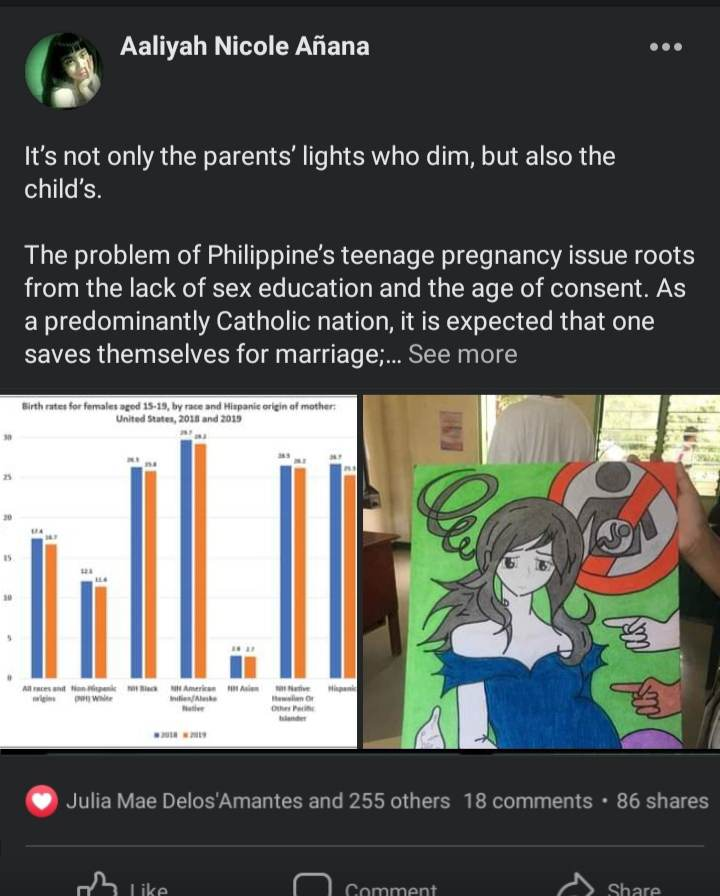

It is quite alarming to hear as a Senior High School student who is also a teen that cases of teenage pregnancy in the Philippines, especially the poor rural areas, ages from 10-19 years old is said to have experienced premarital sex and that merits those teens to become a teenage parents. The rate of early and young moms had risen. We are living in the 21st century, not in the Middle Ages. No child should have to undergo the trauma of pregnancy and childbirth. No child should be forced to grow up overnight to care for another human being when she herself should still be under the care of an adult. No child should place her life at risk to give life to another.
Teenage pregnancy is the biggest problem women and girls face in the Philippines. Based on data from the World Bank, as seen in the United Nations Fund for Population Activities' (UNFPA) January 2020 Policy Brief on Eliminating Teenage Pregnancy in the Philippines, there are “47 annual births per 1000 Filipinas (aged 15 - 19)” with the global average being 44, and “everyday 500 adolescent girls are either getting pregnant or giving birth.”
Hearing and seeing these kind of issues of my fellow teenager filipinos really saddens me. They must be currently working, babysitting and running their worlds in a different pathway; which is entering the early motherhood path. Becoming a teen parent may be problematic not just for the baby but also for the teen parent and will likely to suffer social, health and increased risk of many medical complications, such as premature labor and social consequences
"No one can step into the same river twice, because everything in the world is in perpetual motion which helps the universe to be made up". (Giddens, 2013). As a student, the least thing that we can do is to raise awareness. The development of technology helped me to put down plow, speak out and help to call for actions.
And yes this is me together with my group mates last school year that was tasked to create an art form that represents awareness to teenage pregnancy. What i did might not that be effective and convincing but atleast this may enlighten their minds and to make it clear to everybody that they are free to pick choices but they should be mindful and responsible enough to the possible consequences of their actions. I had also shared what I had gathered through a Facebook post with a content raising awareness and what is it about getting involved with teenage pregnancy.
© 2023 BY Group V | ALL RIGHTS RESERVED